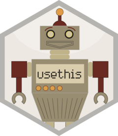

Configure a project to work with AI coding agents
Source:R/tidy-agents.R
use_tidy_agents.Rd![[Experimental]](figures/lifecycle-experimental.svg)
This function sets up a project to work with AI coding agents. Specifically, it:
Creates an
AGENTS.mdfile containing project-specific instructions for R package development. It includes general development advice, as well as pointers to specific skills provided bylearn_tidy_skill().This file is read by most coding agents, including Codex, Gemini CLI, and Cursor.
The file begins with a "This package" section for your own package-specific advice. If you re-run
use_tidy_agents()to updateAGENTS.md, the contents of this section are preserved.Creates a
.claude/directory to configure Claude Code, which doesn't yet readAGENTS.md:CLAUDE.mdimportsAGENTS.md, so Claude Code uses the same instructions as other agents.settings.jsondenies the agent access to sensitive files like.Renvironand.env..gitignoreignoressettings.local.json(for user-specific settings).
.RbuildignoreignoresAGENTS.mdand.claude/, so they aren't included in your built package.